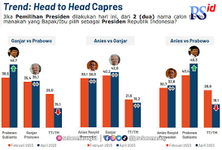
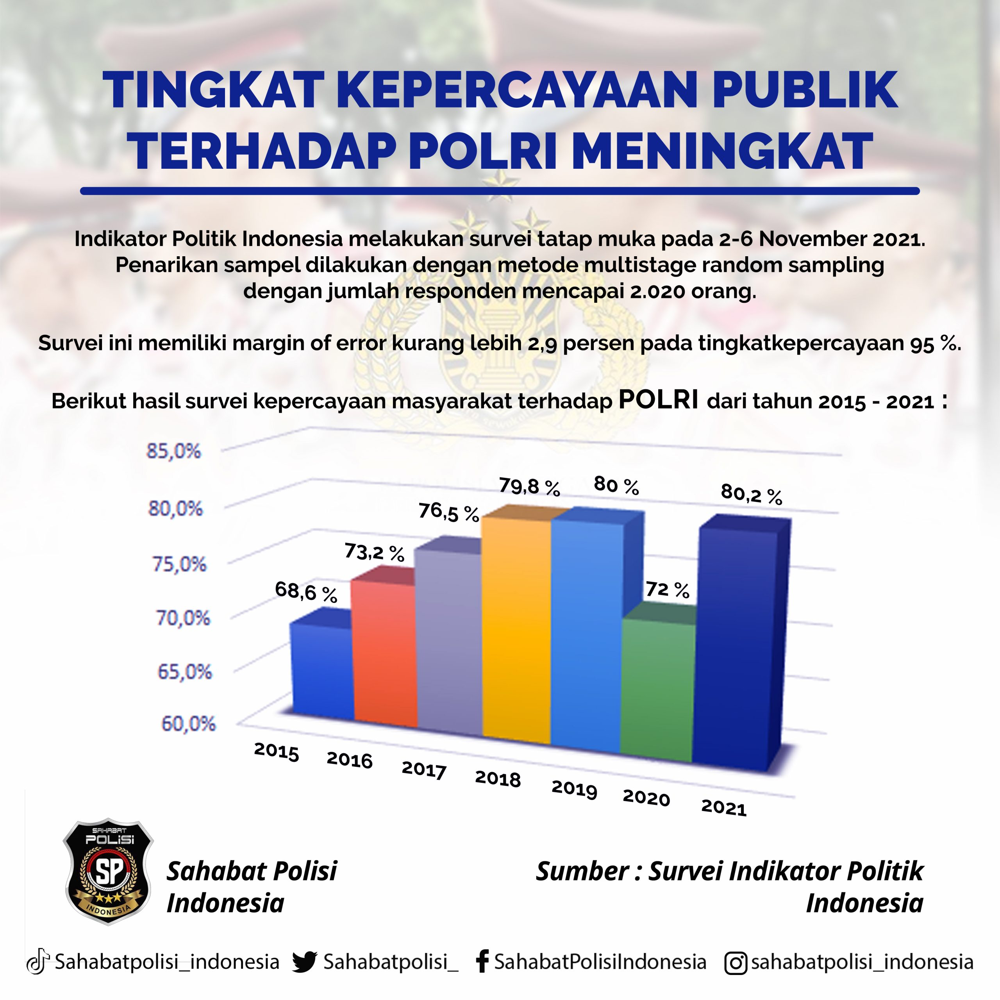

Emblem Jungler assassin
Artikel ini dibuat saat dibuat
Emblem assassin adalah emblem yang dapat dibilang memberikan keuntungan yang sangat tinggi.
Stat yang ditawarkan oleh emblem assassin memang fokus
kepada agresifitas yang tentunya sangat cocok untuk banyak hero.
Beberapa role seperti assassin, fighter, dan marksman akan sangat diungtungkan ketika menggunakan emblem assassin.
Elektabilitas Prabowo

Survei tersebut dilakukan pada periode 25 April-2 Mei 2023 di 34 provinsi di seluruh Indonesia. Populasi survei tersebut merupakan WNI yang telah berusia 17 tahun dan memiliki KTP.
Dalam survei ini terdapat 1.230 responden, diperoleh melalui teknik pengambilan sampel secara acak sistematis,
margin of error +/- 2,8 persen dan pada tingkat kepercayaan sebesar 95 persen.
Metode pengumpulan data dilakukan dengan teknik wawancara via telepon.
Tingkat kepercayaan masyarakat terhadap polri
>
Direktur Eksekutif Indikator Politik Indonesia Burhanuddin Muhtadi menyatakan ada peningkatan
kepercayaan terhadap kinerja Polri.
Jika pada temuan Desember 2022, angkanya baru menyentuh 66,5 persen, kini menjadi 70,8 persen